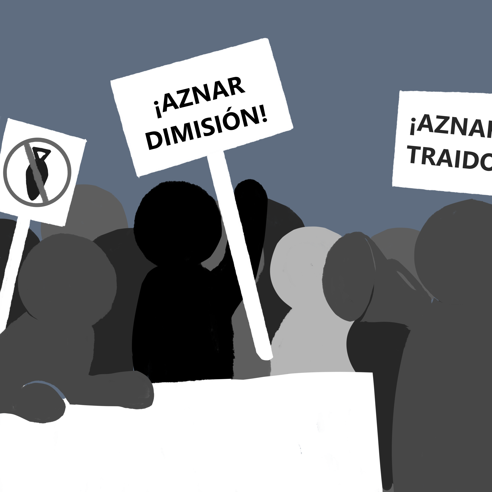

DIARI DE LA PAU
TEMA CENTRAL: d'Iraq, un any després
“Aquells a qui els sembli medieval, fenàtic i estúpid morri i matar en el nom de Déu, que sàpiguen que mataran i morriran perquè la sisena part de la Humanitat, (aleatòriament escollida), es continuï quedant tots els videos i tots els gelats”
Santiago Alba, Torres más altas.

Malgrat tot, la guerra continua; quan falla l’economia, continuen faltant milions de vides, i els estralls de la vella guerra contra el terrorisme van acumulant sinistres danys colaterals arreu del planeta. Implacable i imprertocable, escup i ens mata per dins i ens mata per fora.
Coercitiu i excloent, continua la capacitat del Poder per generar, en dos minuts, determinats estats d'opinió; per “reorientar” les condemnes hipòcrites i unidireccionals a la violència (a quines sí i a quines no?) ; per fer-nos conviure plàcidament amb la “normalitat ciutadana” de l’ocupació i la crueltat; per reduir-nos al mínim la capacitat d’indignació, per atacar les bestieses i obligar-nos a la resignació; per disciplinar-nos la vida quotidiana i omplir-nos de coses per fora i buidar-nos.
Implacable i imprerorbable, el Poder arrasa, malbarata, escup i ens mata per dins i ens mata per fora
per dins en llosa implacable de la societat de consum. Per imposar-nos “tant tens, tant vals” i el “si no consumeixes, no ets”; seon cotxe i segona residència: monovolum i decadència: tamagotxi i anar tancat files entre prozaks, consums i hipoteques.
No és gens casual, perquè les la mateixa lògica de la mateixa guerra: sotmetre’ns i lligar-nos curt. Perquè la màquina no para i la guerra continúa. I continuarà mentre cada dia 25.000 nens morin de gana i 4.000 milions intentin sobreviure en la pobresa. En aquesta eficient expressió del crim organitzat que ha esdevingut en el Nou Ordre Esconòmic Internacional Galeano dixit-, entre els bombardejos mediàtics i els bombardejos reals que ens colpegen, és lícit preguntar-se: què queda, de tot plegat
després? Què en queda (si el poder, com al “1984” d’Orwell no manipula ni la memòria ni les hemeroteques) dels milers als carrers? On para la revolta de les cassoles?
Seguim dient no; ens hem immunitzat i costa molt que ens empassem les mentides quotidianes
Queda, potser, que som menys però més dels que ells voldrien; que seguim dient no; que ens hem immunitzat i que costa molt que ens empassem les mentides quotidianes; que hem perdut ingenuïtat; i, sobretot, que ens reconeixem en molts d’altres: en la veïna de la cassola, en el company de feina amb qui compartim preocupacions, en els nouvinguts a l'assemblea del barri…
Ens queden, també i sobretot, massa dubtes i poques certeses: la certesa que aquesta guerra es guanya i es perd cada dia, en actituds, valors i coherències; la certesa que, malgrat acumular derrotes i fracassos, cal que durem molts anys; la certesa que encara queda tantíssim per fer i que a la trituradora del Poder només podem oposar-li els nostres granets de sorra que, algun dia, l’aturin.
En fi, la certesa, òbvia, que no existeix cap vareta màgica i que l’única forma de canviar les coses és intentant-ho. No hem inventat res: simplement seguim en el viatge a Ítaca de Kavafis cercant “el nom exacte de les coses”, redefinint el dilema de pascal reinterpretat per Chomsky (“si lluiten podem perdre, però si no lluitem ja hem perdut”) i, potser, en allò.
Ens queden massa dubtes i poques certeses: la certesa que aquesta guerra es guanya i es perd cada dia, en actituds, valors i coherències
que amb tanta tendresa va escriure Montserrat Roig respecte als residents antifeixistes dels camps nazis: que enmig d’una Palestina arrasada, una Amèrica Llatina torturada i una Àfrica obligada i condemnada per la SIDA no podien dir que havien aconseguir el món millor pel que lluitaven, però sí que, indefectiblement, eren millors persones, més justes, més solidàries, més ètiques, més lluitadores…
A qui li sembli ben poca cosa, tambñe ens queda que vam augmentar el dèficit públic, que l’Estat es va neguitejar, es va tensionar i es va gastar milions i milions en propaganda, contrainsurgència informativa i serveis d’informació; en teledirigir falses pors preprogramades en control social; i, sobretot, en mil·limetrar cada pas dels qui continuen comentent el delicte d’emprar l’esquerra per pensar i actuar.
Des de l'aleshores, ni l’Estat ni el PP no s’ha aturat. I continuen malbarant milions i imposant, encara, la particular Doctrina de Seguretat Nacional Mayor Oreja: la doctrina de la paràlisi social (“palo a lo que se mueva”), la por i l’amnèsia.
Per això, quan algun innocent pregunta per què existeixen 8 milions de pobres si Espanya va tant bé, perquè guanyen tants els banquers o, simplement, per què no apareixen les armes de destrucció massiva o per què els diputats s’apugen els sous mentre d’altres milers cerquen un lloc de treball precari, li plouen les hòsties. És normal. No s’ha après la lliço: cal consumir Democràcia i Nou.
El text sembla criticar la tendència a rebutjar o silenciar aquells que qüestionen les desigualtats i les injustícies socials, presentant-ho com una reacció esperada i normalitzada. Els exemples donats, com la pobresa, els guanys dels banquers, la manca de troball i altres problemes socials, apunten a una crítica del sistema econòmic i polític vigent. La frase final, "cal consumir Democràcia i Nou", sembla suggerir que es necessita un canvi en la manera com s'entén i s'exerceix la democràcia, així com una nova manera d'abordar els problemes socials i econòmics.